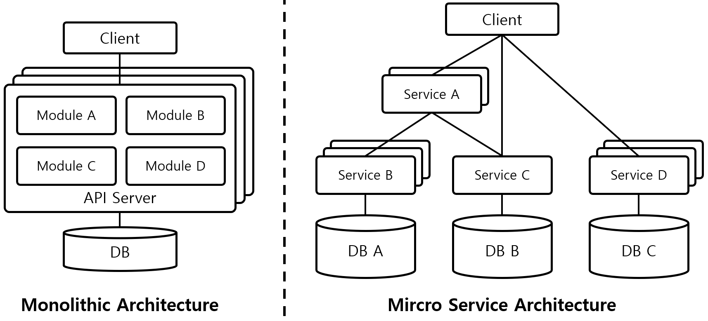

What is MSA?

- Monolithic’s Disadvantage
- Changes in some modules affect the entire application
- Lack of scalability
- Micro Service Architecture’s Advantage
- Scalability
- To update just one service, we don’t need to shut down the whole services
- Which means, we can focus on specific services which are important
- Fast Developement
- We can deploy each service seperately without dependency(which monolithic architecture cannot)
You don’t have to wait until other team finish their developement
- We can deploy each service seperately without dependency(which monolithic architecture cannot)
- Reusability
- We can re-use service easily which is directly related to scalability
- De-coupling
- As the coupling between services is reduced, team building becomes easier and more free
- This improves the ability to embrace new technologies
- Reduced maintenance difficulty.
In the case of monolith, if an error occurs. We have to go through the whole project in debug. However in MSA, project is small thus can be easily debugged
- Scalability
- Micro Service Architecture’s Disadvantage
- Increased maintenance difficulty
- As I said above, Unit tests are completed quickly, but integration tests that go back and forth to other parts take a lot more time than monolithic ones
- Hard to control transactions
- In the case of an integrated service that use multiple services, it is difficult to handle transactions
- To overcome with this disadvantage, we can use Saga pattern
- Increased maintenance difficulty
To summarize MSA, if your service needs a lot of traffic, move a lot of money, need continous intergration, it will be best choise. ex) Portal site, shopping site etc. Beacuse MSA can gives you scalability, fast dev., Reduce server restart time by isolating failed services etc.